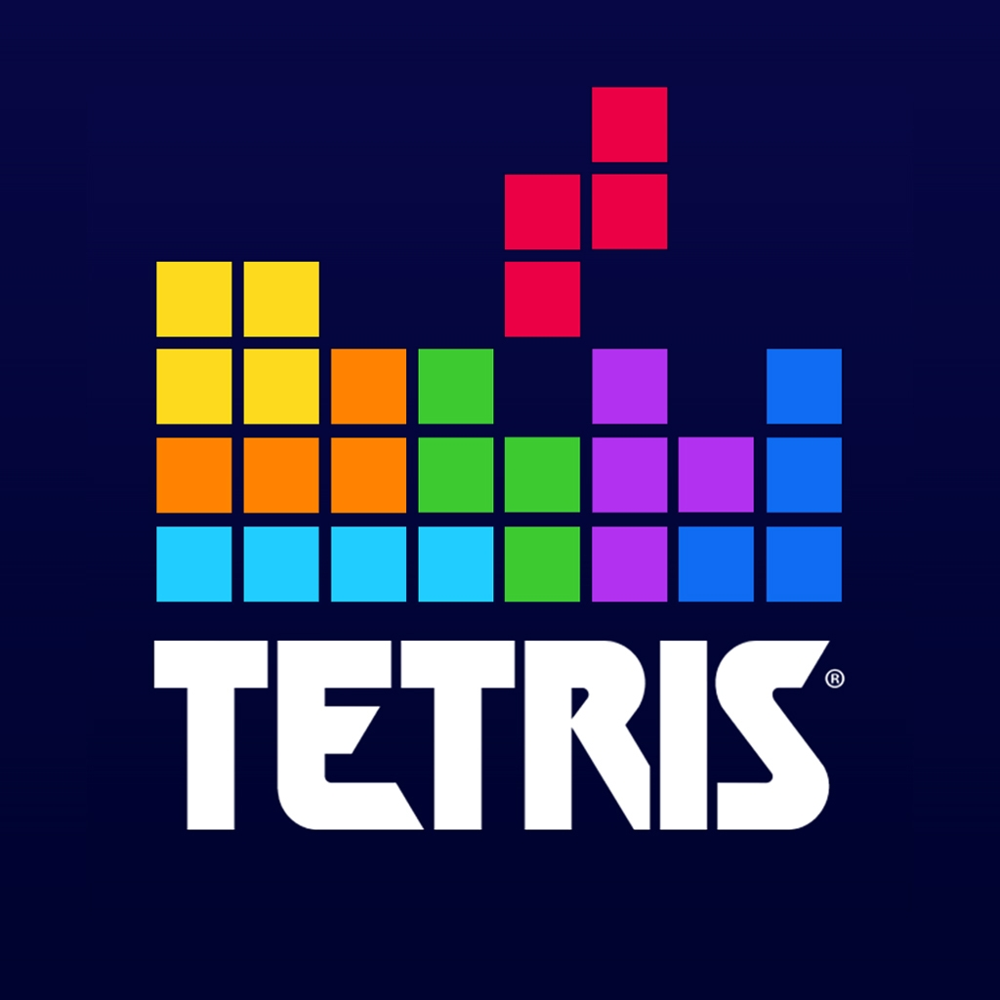

In this project, we have developed a Python script for scraping Amazon product links based on a given product name. Leveraging the requests library for HTTP requests and BeautifulSoup for HTML parsing, our script aims to facilitate efficient data retrieval from the Amazon and Flipcart website.
In this project we developed a machine learning model for CT scan localization to improve the accuracy and efficiency of medical procedures.
In this project we Perfomed a sentiment analysis focused on tweets related to Super Bowl 2023. Leveraging the cutting-edge Roberta model for natural language processing, the goal was to unveil the collective sentiment expressed on Twitter.
This project focused on elevating zodiac sign predictions through detailed analysis of blog texts. We aim to develop an advanced prediction model that extracts crucial insights, ensuring unparalleled accuracy in determining zodiac signs.

this project was a development of a tetris game .